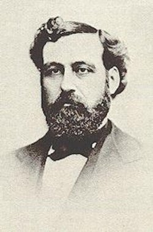

腓力白力斯 Philip Paul Bliss (1838-1876)

诗人小传
腓力白力斯（Philip P.Bliss）可说是美国近代仅次于芬尼克罗斯贝的大诗人。他的一生就像一颗夏夜的流星，在空中一抹而空，虽然极其短暂，却在人的记忆中留下灼热明亮的印象。
白力斯本人除了他的音乐天赋之外，可说是很平凡的人。他自己的身上虽然没有多少伟大惊人的事发生，但他却活在一个伟大的传福音时代中。从一八六○年代起，大西洋两岸的福音职事几乎都挂在慕迪的身上，慕迪本人没有诗歌的恩赐，但他却具慧眼，能发掘出恩赐，并成全恩赐。孙奇是其中最有名的歌唱家，而白力斯则是最有名的圣诗作家；虽然围绕在慕迪身边有许多突出的恩赐，但白力斯仍旧是星光褶熠，而且因着恩赐之间的相互辉映，更显得其辉煌。他的一生就上算在他紧紧地把握住了神所量给他的机会，而将自己投身在当时福音运动的主流中，所以他能在短短的六年事奉中，将他的恩赐发挥得淋漓尽致，并得其所哉。
因此，当你看见他的伟大处时，你会被他的平凡所吸引；可是当你看见他的平凡处时，你又不得不承认他是个伟大的人。他的谱曲虽然比不上柯克派克（W．J．Kirkpatrick）或迈格纳汉（J．McGranaham），却也谱下了不少不朽的曲子，到今天还广被教会唱颂；他的诗歌不像芬尼·克罗斯贝那样才华四溢，却是到处被圣徒所喜爱；他歌唱的技巧不像孙奇（Sankey）那样地动人心弦，但神却用他的声音拯救了千千万万的灵魂。他为我们每一个平凡的人留下了榜样。只要我们全心爱神、事奉神，我们在神手中就必定成为一个祝福教会的器皿。
提及白力斯的一生，我们就不得不先提到他的家庭，因为他的家庭对他一生的影响实在是重大而且深远。
他生于一八三八年七月九日，殁于一八七六年十二月二十九日，一生只有短短的三十八年。好像一朵美丽的花，正当盛开的时候，就忽然凋谢了，引起人们对他无穷的怀念。他出生于宾州的克里菲德（Clearfield）的罗蒙城（Rome），他的父母不仅热诚爱主，并且都热爱音乐。他们是当地卫理公会虔诚的会友，在他们家里处处都可接触到音乐。每一天，他们全家都要聚在一起，用音乐和歌唱来赞美神、敬拜神。这是白力斯后来一生献身于音乐事业的原因和力量。他自己最早期对主的认识，和属灵生命根基的栽培，也都是在这种充满了音乐的环境之下建立的。他自己曾说，这种充满了音乐的赞美和敬拜，使他每一天都活在主里面，每一时刻都接触基督。
他从小就那样喜爱音乐，他父母又不断地鼓励他，很自然地，他就跟着父母一起歌颂赞美神了。他十二岁便进入当地的教会，因为他发育得早，十岁就长得和成人一样高大，神也赐他俊美健壮的体格。他有一个很有趣的故事：有一天他经过一个地方，听见一阵前所未闻的优美琴声，这是他第一次听见钢琴的声音。他的心被这甜美琴音吸引，就静悄悄地走进一间开着房门的屋子，默默倚在门柱旁，聆听这“此曲只应天上有”的音乐。当这位弹琴女孩停止弹奏时，他即走向前去恳求她多弹几曲，（那时他并没有任何其他的企图，只是被那琴声溶化了），那女孩大吃一惊，恐惧的注视着他，然后十分气愤地赶他出去。虽然他羞愧地夺门而出，但是他的心一直被那美妙的琴声所吸引。
他的童年时光大多在一个农庄里渡过，除了读过一所公立学校以外，有时也花时间在一处小小木材贮藏室里看管。一八五○年是他一生中的转捩点——他找到机会向人承认他是基督徒，并受浸归入主的名下。
一八五五年他到宾州东特洛伊（East Troy）学校读书。次年夏天，他进入农场工作，维持生活。因为他的思想反应敏捷，加上学习努力，同年（十八岁）就取得了教师资格，开始在哈思维尔（Hartsville）教书。他得着了好环境，得以正式开始学音乐，而幸运的是他能得着当时颇负盛名的音乐家汤那（J．G．Towner）的指导。一年之后，他就在宾州罗蒙城柏来布利（Wm．B．Bradbury）所主持的一场音乐会上参加演出。这实在是神奇妙的掌握和安排，为白力斯开了一条新路。从这时起，神种在白力斯里面音乐的恩赐，开始茁壮生长。
他在教书的生涯中，邂逅了杨露丝小姐（Miss Lucy Young），并于一八五九年六月一日结婚。杨露丝小姐是一位纯良贤淑的姊妹，和白力斯同工又同心，是他以后在事奉上的好帮手。
他又一连参加了一八六○年七月和八月在Geneses，N．Y，由T．E．Perrins和T．Cook，Bassini等人所组织的音乐演出会。此后，白力斯就专心于音乐教育。从一八六一到一八六三年间，他一面参加音乐会演出，一面在师范学院深造。所有他的老师都激赏这一位学生的天赋和他对乐理的造诣。
他还有一个非常有趣的故事，从这里也可看出白力斯的幽默感。一八六三年，著名的路特博士（Dr．George Root）收到白力斯给他的一封信，这信是一首诗，词句优美，声韵更佳，委婉地说：“谁愿送一枝横笛给这首诗的作者呢？”当时，路特博士正好要找一个灵巧的人替他办事，他觉得白力斯正合条件，于是把他作的曲留下，而寄给他一枝美丽的横笛，并且函邀白力斯前来面谈。白力斯同意作他的代表，到芝加哥各处去开音乐会并召开会议。一面吸引群众对他们的注意，一面从会议讨论中深知群众最欣赏的是哪一种音乐。
那时，白力斯常常作曲，不久，主的呼召明显地临到他，要他在诗歌和音乐上服事主。他所写的诗歌，每一首都非常优美而且充满了能力。
这样，白力斯在路特和凯弟（Cady）的指导下工作了四年。在这四年中，他经常在美国西北部开音乐会和音乐讨论会。一八六九年夏天，他遇见神所重用的仆人慕迪弟兄，他们一见如故，恩赐互惜。慕迪格外鼓励他以诗歌服事主，从此，白力斯就开始在教会诗班中服事了。
后来，他和韦曼（Mr．C．M．Wayman）一同作诗并且唱诗，他们都是热爱主的基督徒，经常一同参加慕迪的事奉工作。惠特少校（Major D．W．Whittle）说，在慕迪的聚会中，他们听见了他们二位的独唱，才深深觉得独唱也能成为事奉得力的兵器。白力斯也常和惠特同工。他们一同在伊利诺州的温尼倍各城（Winnebago），开始了一个主日学会议，惠特请白力斯在会中唱诗，效果非常的好。
有一段时间他在芝加哥第一公理会以音乐服事主。三年后，他觉得该停止这一事奉，就和惠特少校在一起，专唱福音诗歌来传福音，那时他所写的诗歌也成为传福音有效的工具。他的诗歌和独唱都那样容易摸着人的感觉，使人深受感动。他的名声很快就传到当地的每一个角落，成为一个无人不知又有能力的福音使者。
一八七三、七四年之交，慕迪因看见主那样使用白力斯的恩赐，就从苏格兰写了好几封信给他，竭力劝勉并催促白力斯放弃一切事务，专心在福音诗歌上服事主。慕迪也同时写了几封信给惠特，劝勉他们俩人同工，开福音聚会。因为慕迪的鼓励，他们开了两次音乐福音聚会，看看它的结果以及主的引导，第一次聚会在伊利诺州的窝基根（Waukegan），从三月二十四日到二十六日。这次聚会的效果出乎意料的好，是他们一生不能忘记的。惠特少校后来提及那次聚会说：“我们回到芝加哥后，真不知道要怎样感谢赞美神，因祂赐予我们无限的祝福。”白力斯自此以后，就辞去了一切职务，专心服事主。
这段时间，白力斯作曲的才华和歌唱到处被人传扬，他的收入也渐渐增加，不像以前，他和妻子是长期在经济拮据的情况中，为他们的生活辛苦挣扎，一直盼望有一天神恩待他们，使他们能过安定一点，宽裕一点的生活。虽然这个盼望实现了，但是主对他们却有更多的要求和更大的呼召。白力斯心中充满了主的爱，他毫无考虑地答应主的呼召，把他们多年的盼望放下，愿意过那简单朴实的生活，跟随救主的脚踪。惠特少校说：“一直到白力斯临终，我从未听说他心中有一点点后悔的感觉，也没有不情愿的意念，只觉得主的爱是何等伟大、甘甜。”
他和惠特少校两人到各城去开福音聚会、唱诗、传扬福音，特别在伊利诺、威斯康辛、密西根、宾州、肯塔基、田纳西、明尼苏达、密苏里、阿拉巴马、乔治亚……等州，到处都能看见他们传福音、报喜信的佳美脚踪。一八七六年九月，白力斯和太太一起去诺思菲地（Northfield）拜访慕迪。而慕迪是一个最会抓住机会的人，利用他们来访问的机会，让白力斯在一周内到十一个聚会竭力事奉，他的妻子也一直同心服事。
最后我们用很沉重的心情来写白力斯生命末了的一段。白力斯传福音的恩赐和工作正如旭日东升，各处都飘扬他深沉感人的歌声。英国教会也闻名前来邀请，盼望他能去英伦三岛传播救主福音。慕迪一直在背后支持、鼓励，叫他勇往直前。就在英伦邀请函抵达后，他们决定先去芝加哥和慕迪一同事奉，再去英国。那时白力斯正好回到他宾州罗蒙城老家，与他的家人一同欢度圣诞节。慕迪也邀请他在圣诞节后，到慕迪会幕大会中唱诗，但是没有想到慕迪突然收到一封电报，说白力斯和他妻子在赴芝加哥途中，因一件可怕的灾祸，双双到主那里去了！
这真是使人震惊的消息。事情发生的经过是这样的：在一八七六年十二月二十九日，当他们离开罗蒙城赴芝加哥的途中，他们所搭的火车在俄亥俄州的阿叙特伯拉（Ashtabula）撞到桥梁，从六十尺高的桥上坠落下去，整列火车在烈火中焚烧，当时白力斯已经幸运的从车中逃出来，本可免于一死，但他却回去抢救他的妻子，终于与妻子一同葬身在火焰中。
在这事发生之前，白力斯心中好像早就有预感。他在一生中最后一次在芝加哥主持的聚会中对会众说：“我不知道会不会再有机会在这里对你们唱诗，因此我要把握住这一个机会，用我所有的力量，把这首诗歌献给你们。我要让这首诗歌从我生命的最深处唱出来。”这是他一生中所唱最后一首诗歌，也是给人印象最深的诗歌，歌名叫：“我不知何时主来接我去”。